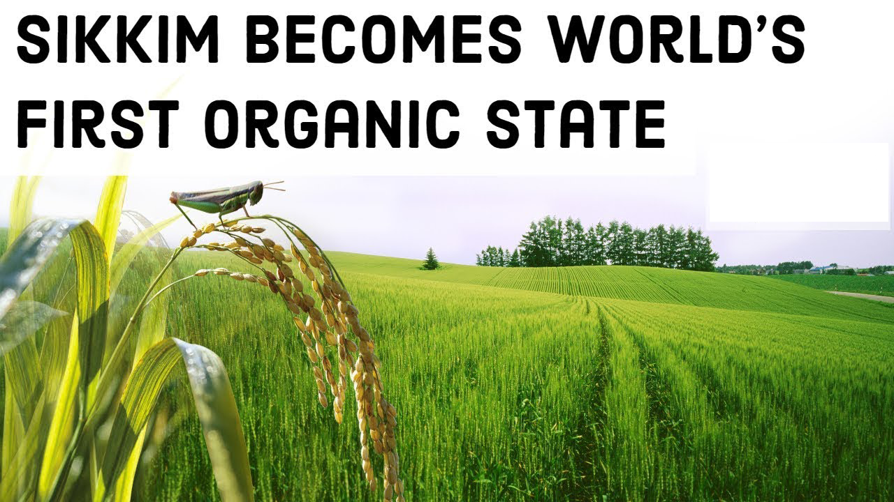

The Indian state of Sikkim just achieved the feat of being the world's first organic state and has been awarded UN Future Policy Gold Award 2018, also known as the Oscar for best policies, beating 51 nominated policies from 25 different countries.
The smallest and the youngest state of India has the most inspiring tale to tell. Once considered to be one of the poorest states in India with 35 per cent of the people living below the poverty line, Sikkim now stands amongst the top income generating states with a substantially low level of poverty.
Sikkim is located in northeast India, on the border with Bhutan, Tibet, and Nepal. It is part of the Himalayas, and forests, pastures and steep mountainsides make up most of Sikkim’s fragile ecosystem. Only around 10% of the land (75,000 hectares) is farmed.
The first 100% organic state in the world
Sikkim beat 50 other nominated policies to win the Gold Award for its State Policy on Organic Farming (2004) and Sikkim Organic Mission (2010), which have enabled it to become the first 100% organic state in the world. That’s right – all of its farmland is certified organic. Overall, the transition to 100% organic has benefited more than 66,000 farming families.
Organic farming is considered the agricultural system closest to the traditional Sikkimese way of farming, which is rain-fed with low external inputs. However, Sikkim’s approach goes far beyond focusing solely on organic production – it also focuses on consumption and market expansion, health, education, rural development, and sustainable tourism. As such, Sikkim is an excellent model for other Indian states and countries worldwide who want to upscale agroecology.
Showing political will and commitment
In 2003, Chief Minister Pawan Chamling announced the vision for Sikkim to be India’s first organic state. In 2010, the state launched the “Organic Mission”, an action plan defining the measures to implement in order to reach the target of converting the entire state to organic. The plan worked – in 2015 Sikkim declared itself the first organic state in the world. It is the first time in history that a state set such an ambitious vision and also achieved it.
The state government showed strong political will and policy coherence, along with well-defined targets and implementation plans. The policy combines mandatory requirements, such as gradually banning chemical fertilizers and pesticides, with support and incentives to build a holistic transformation of the whole Sikkimese food system.
As certification was seen as a crucial part of the transformation, 80% of the budget between 2010 and 2014 was used to build the capacity of farmers, rural service providers, and certification bodies and to support farmers in acquiring certification. In parallel, measures were undertaken to supply farmers with quality organic seeds, such as the strengthening of local organic seed development and production.
Phasing out chemical fertilizers completely
The policy focuses on enhancing soil fertility, preserving water quality and increasing biodiversity at the field and landscape level. To improve soil health management, the government has provided support for farmers to perform 40,000 soil tests per year. The results are delivered in the form of Soil Health Cards, which give nutrient status and recommendations on inputs.
The policy also cleverly combined the gradual phase-out of subsidies for synthetic inputs with a conversion strategy that involved training farmers in how to produce organic inputs such as compost, vermicompost and organic pesticides using local plants. More than 100 villages with 10,000 farmers in all four districts of the state benefited from these training programmes during the first pilot phase of the mission (2003-2009).
The phase-out of chemical fertilizers was implemented gradually but firmly. It was a bold government decision but farmers and citizens say they are proud of this policy and give it their political support.
The Sikkim ‘organic brand’
The policy also sought to build a ‘Sikkim organic brand’, as a way to target national and international markets. Because of their unique climate and farming culture, Sikkim’s marketing strategy focusses on specific crops such as cardamom, ginger, oranges, tea, kiwi fruit, passionfruit and mountain vegetables.
Sikkim’s tourism sector has also benefited from their new organic image: between 2012 and 2016 the number of Indian tourists increased by 40%, and the number of foreign visitors doubled!
Building knowledge and engaging young people
Today, organic farming is included in the school curricula. A number of platforms for knowledge exchange have been established, including livelihood schools, two Organic Centres of Excellence and three Organic Farming Training Centres, which engage with unemployed youths. In 2016, a National Organic Farming Research Institute was established. The Institute provides technical support to organic production systems, not only for Sikkim but for the whole North East Hills Region of India.
The policy recognized that many young people do not consider agriculture an attractive or viable opportunity for themselves. Today, experts say that Sikkim is one of the few places in India where young people decide to stay on the land.